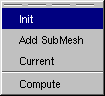
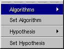
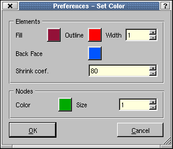
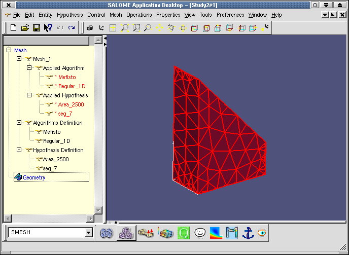
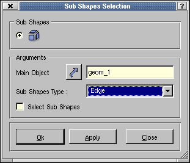
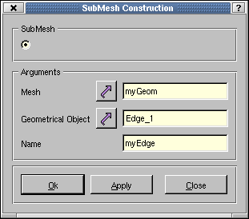
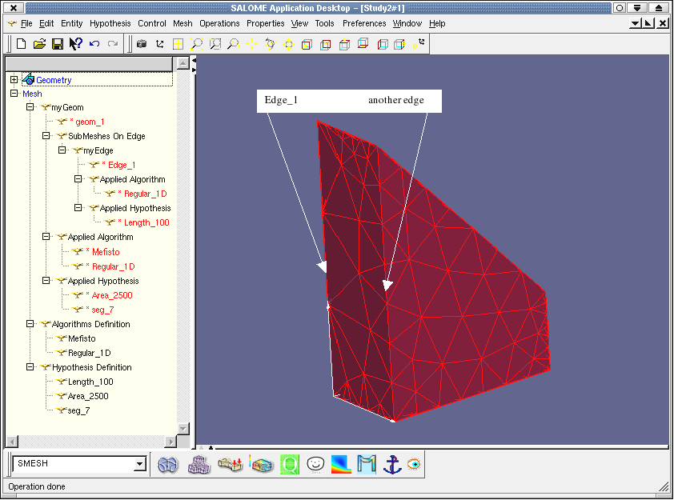
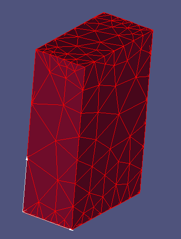
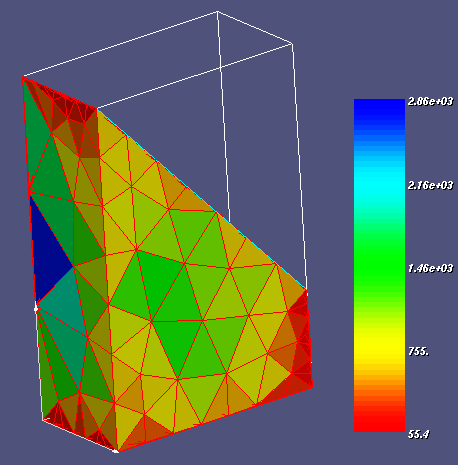

Before following this tutorial you need to create or import a geometry. Please refere to the GEOM module documentation to do so.
Now we have to load SMESH component. To do so :
SMESH is used to mesh edges, faces and volums each one thanks to a specialised algorithm. To mesh an entity which degree is n, one must have all its lower degree entities meshed. For instance, to mesh a face requires a previous meshing of all its edges. In the example MEFISTO meshes faces, and Regular_1D meshes edges. MEFISTO doesn't check how edges are meshed. The only test it does is to verify that edges are meshed before starting its work. MEFISTO requires an hypothesis : maximum area of triangles. Regular_1D requires one hypothesis among two: number of segments per edge or length of segment.
The entire operation is done by :

Below are explained those 6 steps precisely :
init a mesh object associated to a geometrical object :

define algorithms for meshing :

define hypothesis of calculation :
In the menu bar, find Hypothesis then Hypothesis and click on
Segments. Then in the dialog box give a name for hypothesis and a
value that is the number of segments per edge. Enter 7 segments for
example.
Do the same for 'Max. Element Area' argument that is the maximum surface
of triangles builded during meshing. Enter 2500 here.
Attach previous arguments (hypothesis) and algorithm to the
topology :
Select the object in the Object Browser then using pop up menu (right
click on object),
'Set algorithm' and 'Set Hypothesis' into specialized dialog boxes.
You can also find these methods in the menu 'Hypothesis'.
Selecting the mesh object before, start computation in the pop up menu; click on 'Compute'.
Update the display using 'Update' if necessary.
Note : in Preferencies / Mesh menu there is an
option to have an automatic update of the display after operations that
modify it such as Compute, adding nodes… If this option is not
setted user must make an update of the display manually.
You may also adjust the display 'Properties' / 'Display Mode' has
you prefer ; shading, wireframe or shrink,
and adjust color and size attributs in a specific dialog box shown
below.

At this final step you can observe the result of 2D meshing of faces by MEFISTO.
Note : it is possible to change an hypothesis by mean the pop up then Edit and finally compute again.

We would now make a mesh as before but with a local modification of parameter (hypothesis) on an edge. We first have to explode the initial topology in GEOMETRY component. This operation will give us access to sub shapes edges of geom.brep.
import or create a geometry as before
call 'Explode' method found in 'New Entity' on the menu bar ; (remember the tip about Automatic/Store !)

select the main object, choose 'Edge' in the combo box and click on
Ok.
Note : do not click on 'select sub shape' at anytime. This
function is used with OCC viewer for individual sub shape selection not
yet available with VTK.
Now the object browser contents all edges as sub shapes of the main
topology. Select the first edge Edge_ 1 and display only it.
Use the pop up 'Display only' mode for this.
You may also rename the edge to remember it for future meshing.
Our scope : apply a local hypothesis on this edge.
The job is now finished for GEOMETRY component.
Load SMESH component and use menus 'Mesh' and 'Init' to load the
topology into SMESH as before.
(Already defined if you have kept the previous study.)
Define algorithms Regular_1D and Mefisto using menus 'Hypothesis' and 'Algorithm'.
Define hypothesis 'Segments' = 7 and 'Max. Element Area' = 2500. (Already defined if…)
Define another hypothesis 'Local length' = 100 to be used only as local parameter for the edge.
Now we have to attach algorithms and hypothesis to topologies, the
global and the sub shape edge.
For the main topology, select it and use 'Set algorithms' and 'Set
Hypothesis' and attach :
hypothesis 'Segments' = 7 and 'Max. Element Area' = 2500.
To set a local parameter of meshing on the edge we do :
click on 'Mesh' menu then 'Add Sub Mesh'. On the dialog box select the
main object then sub object edge from Object Browser and GEOMETRY field.
Give it a local name; for example myEdge or anyone.

Set the algorithm used for edge meshing. Here use Regular_ 1D.
Set a local hypothesis to the edge. Use 'Local length' = 100.
'Compute' (and 'Update' display if necessary see
before) the main mesh object. This will compute also the edge sub
shape.
Do not forget to activate the display mode Wireframe,
Shading or Shrink; see in pop up menu 'Properties',
'Display mode'…
Move the point of view to watch the edge meshed with a local hypothesis 'Local length' = 100.
As we see below, the effect produced by setting a local hypothesis setted on the edge Edge_ 1.
Compare to another edge that have the same physical length.


Test now a control function of area for mesh resulting triangles.
Find Control on the menu bar then Cells and Area. The
image below displays areas with a color depending on its value in the scalar
bar shown on the left.
Scalar bar general parameters are setted in Preferencies /
Mesh / Scalar Bar.
Specific range parameters are changed with the pop up menu.
